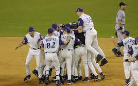
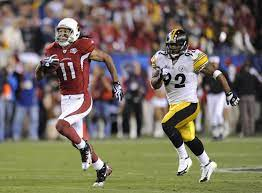

Top Arizona Sports Stories:
- The 2001 World Series Champions: Arizona Diamondbacks
- Most recent professional championship
- Defeated the New York Yankees in 7 games

- The 2021 NBA Finals Run: Phoenix Suns
- Completed several 4 game sweeps in the playoffs
- Faltered to the Milwakee Bucks with Giannis and Khris Middleton

- The 2008 Superbowl Appearance by the Arizona Cardinals
- Led by Kurt Warner and Larrry Fitzgerald
- Lost only by a controversial catch call late in the 4th quarter
